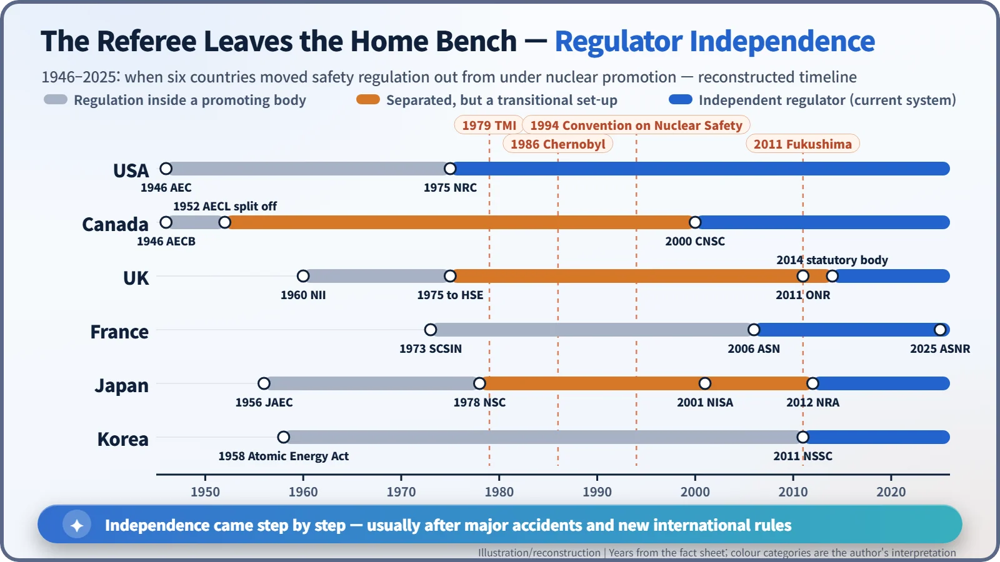
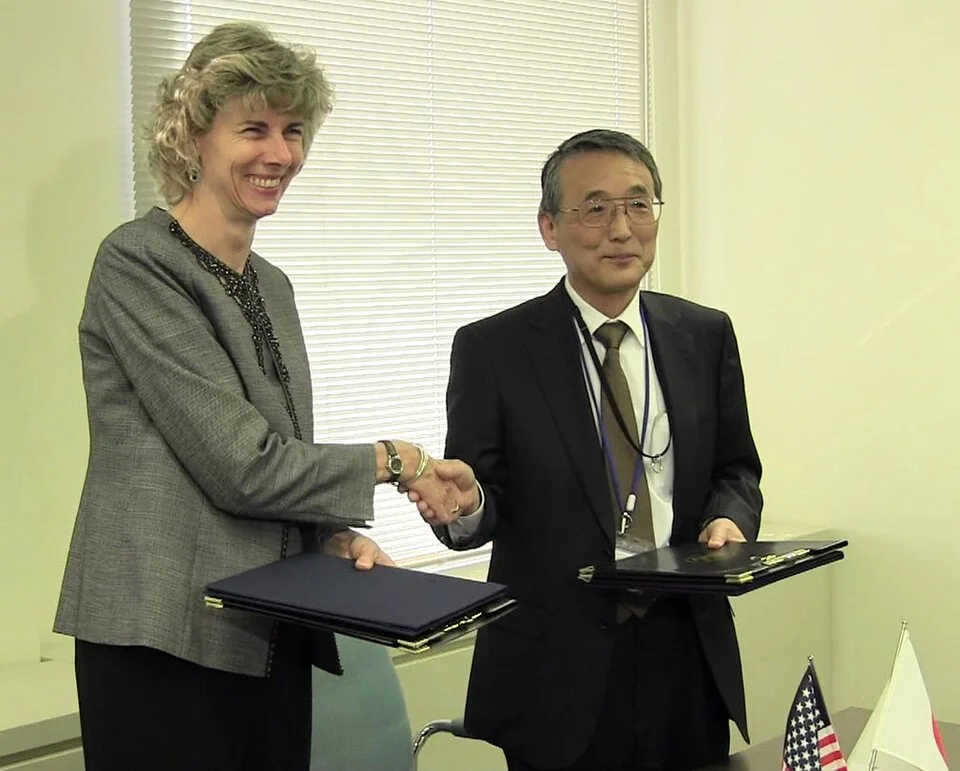
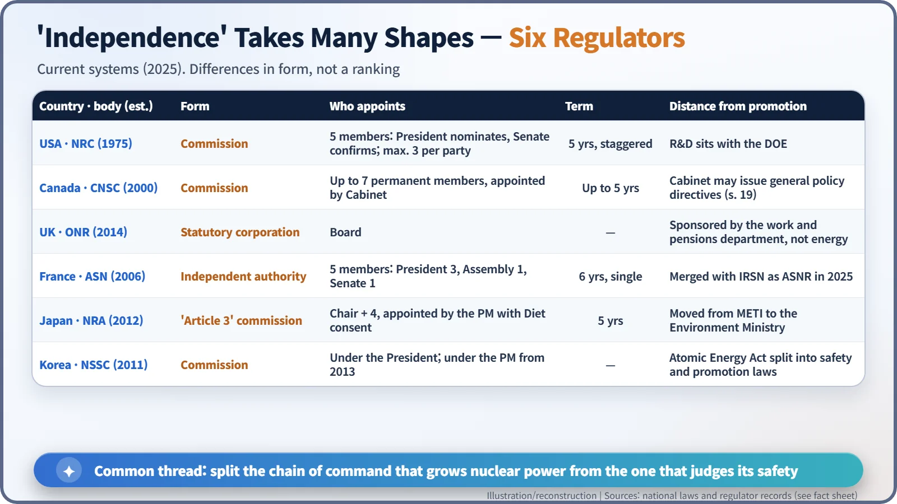

Nuclear History · 244
"Their Independence Was a Mockery" — How the World's Nuclear Regulators Broke Free from Nuclear Promotion
One country after another took the referee's whistle away from the home team's coach, usually after an accident, and each built its independent regulator in a different shape.
In the early atomic age, the same agencies that promoted nuclear power also judged its safety. Between 1975 and 2014, one country after another moved its regulator out from under the promoters, usually after a major accident. The United States, Canada, the United Kingdom, France, Japan and South Korea all arrived at an independent regulator, but by strikingly different routes and in different forms.
"A mockery"
In July 2012 a commission set up by Japan's National Diet delivered its report on the Fukushima Daiichi accident. The Fukushima Nuclear Accident Independent Investigation Commission (NAIIC) was chaired by Kiyoshi Kurokawa, a physician and former president of the Science Council of Japan. Its executive summary contains one of the bluntest sentences ever written about a safety regulator: [1]
"Their independence from the political arena, the ministries promoting nuclear energy, and the operators was a mockery."
The commission also gave the problem a name: "regulatory capture", a situation in which, in its words, "the oversight of the industry by regulators effectively ceases."
Why does the body that judges nuclear safety need to stand apart? And when, and in what form, did different countries actually build that independence? The answers turn out to be surprisingly varied.
Everyone started under one roof
In the early atomic age, the people who promoted nuclear energy and the people who checked its safety usually sat in the same organization. That was true of the US Atomic Energy Commission (AEC), created in 1946, and of Canada's Atomic Energy Control Board (AECB), set up the same year and at first also responsible for research and development. Japan began with its Atomic Energy Commission in 1956; South Korea passed its Atomic Energy Act in 1958.
At the time this was not strange. Reactor experts were few, and governments wanted the technology to grow. The trouble appeared as plants multiplied. It is hard for one organization to say "build faster" and "stop now" in the same breath. It is a bit like letting the home team's coach blow the referee's whistle.
America cuts the knot; accidents push everyone else
The United States was the first to make a clean break. On 19 January 1975 the AEC was abolished and an independent regulator, the Nuclear Regulatory Commission (NRC), opened its doors. What came next is less well known. After the Three Mile Island accident in 1979, the Kemeny Commission recommended replacing the NRC's five-member commission with an agency headed by a single administrator, arguing that the collegial structure was too slow. Congress did not adopt the idea, but it left a lasting question: does "independent" have to mean "a commission"? [9]
After Chernobyl in 1986, the principle became an international norm. The Convention on Nuclear Safety, adopted in Vienna on 17 June 1994 and in force since 24 October 1996, says in Article 8(2): [2]
"Each Contracting Party shall take the appropriate steps to ensure an effective separation between the functions of the regulatory body and those of any other body or organization concerned with the promotion or utilization of nuclear energy."

Same destination, different roads
Canada
Canada moved research and development to the state company AECL in 1952, leaving the AECB as the regulator. The Nuclear Safety and Control Act, assented to on 20 March 1997, replaced it with the Canadian Nuclear Safety Commission (CNSC), which came into being on 31 May 2000. [3]
United Kingdom
The UK created its Inspectorate of Nuclear Installations in 1960 inside the Ministry of Power, then moved it in 1975 to the newly formed Health and Safety Executive, a body concerned with workplace safety rather than energy. The Office for Nuclear Regulation (ONR) was formed in 2011 and became an independent statutory corporation on 1 April 2014. Its sponsoring department is the one for work and pensions, not energy. [4] [5]
France
France began in 1973 with a central nuclear-safety service (SCSIN) inside the Ministry of Industry. Renamed DSIN in 1991, it was led from 1993 by André-Claude Lacoste (born 1941). When the Nuclear Transparency and Security Act of 13 June 2006 turned it into an independent administrative authority, the ASN, Lacoste became its first chairman. Of its five commissioners, three are appointed by the President of the Republic and one each by the presidents of the National Assembly and the Senate, for a single six-year term. In 2025 the ASN merged with its technical support organization, IRSN, to form the ASNR. [6]
Japan
Japan set up a separate Nuclear Safety Commission in 1978, prompted by the 1974 radiation leak on the nuclear-powered ship Mutsu. But that commission had no power to regulate operators directly. From 2001 day-to-day regulation sat with the Nuclear and Industrial Safety Agency, part of the Ministry of Economy, Trade and Industry, the very ministry that promoted nuclear power. This was the structure the Diet commission called a "mockery". Its Recommendation 5 said a new regulator must be independent of "organizations promoted by the government", of the operators, and of politics. On 19 September 2012 Japan launched the Nuclear Regulation Authority (NRA) as a strongly independent "Article 3" commission attached to the Ministry of the Environment. Its first chairman was Shunichi Tanaka. [1] [7]
South Korea
South Korea had long let the ministry that promoted nuclear energy also oversee its safety. On 26 October 2011 it split its Atomic Energy Act into separate safety and promotion laws and set up the Nuclear Safety and Security Commission under the President; in 2013 the commission moved under the Prime Minister.

Independent bodies still get tested
A new nameplate is not the end of the story. In late 2007, Canada faced a shortage of medical isotopes after the NRU research reactor at Chalk River stayed shut; the CNSC had held it back over unmet safety-licence conditions. Parliament passed special legislation in December to let the reactor restart. On 15 January 2008 the government revoked Linda Keen's designation as the commission's president. The government cited a "lack of leadership"; critics saw a blow to regulatory independence. Keen challenged the decision, and the court upheld the government. [8]
The episode also shows what independence does and does not mean. Canada's law lets the Cabinet give the commission "directives of general application on broad policy matters," and in most countries the appointment of commissioners and the budget still pass through government and parliament. Regulatory independence is not about floating free of the state. It is about stepping out of the promoters' chain of command, so that no one can lean on an individual safety decision. [3]

A principle confirmed one accident at a time
Commission, independent authority, statutory corporation: the forms differ, and none is simply "the best". The direction, though, has been the same everywhere, and each step usually came after a major accident. Regulatory independence is not a building you finish once. It is a principle that has had to be re-confirmed after every accident.